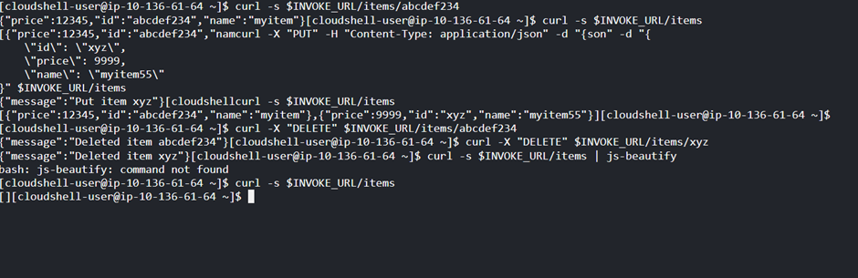

In this step, you will test your API using CloudShell. AWS CloudShell is a browser-based, pre-authenticated shell that you can launch directly from the AWS Management Console. You can navigate to CloudShell from the AWS Management Console a few different ways. In this workshop, we will use CloudShell terminal available on AWS console.
The full URL looks like this: https://vi6vlcxo32.execute-api.eu-east-1.amazonaws.com
#DO NOT COPY THIS!!!
#Replace URL with the Invoke URL above
export INVOKE_URL="https://**vi6vlcxo32**.execute-api.eu-west-1.amazonaws.com"
curl -X "PUT" -H "Content-Type: application/json" -d "{
\"id\": \"abcdef234\",
\"price\": 12345,
\"name\": \"myitem\"
}" $INVOKE_URL/items
Use the following command to list all items.
curl -s $INVOKE_URL/items
Use the following command to get an item by its ID.
curl -s $INVOKE_URL/items/abcdef234
Use the following command to delete an item.
curl -X "DELETE" $INVOKE_URL/items/abcdef234
Get all items to verify that the item was deleted.
curl -s $INVOKE_URL/items
